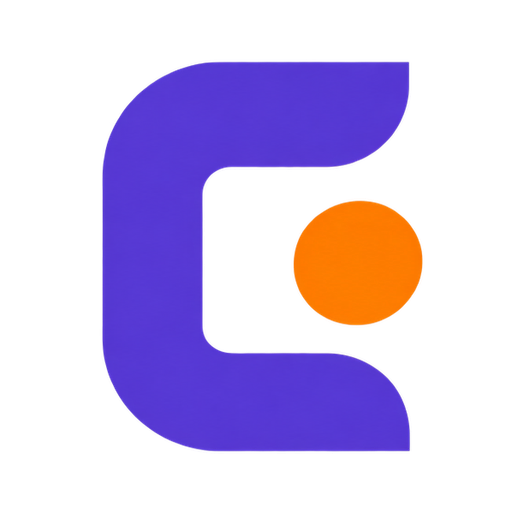

Software sob medida para operação que não pode parar
Plataformas de venda, sistemas internos e integrações para empresas que já faturam e não têm o luxo de recomeçar do zero. A gente entra no sistema que existe, com ele no ar.
- Setor regulado
- Pagamento e estoque
- Integração com CRM
- Segurança e LGPD
Serviços
O que a gente constrói
Tudo abaixo já está rodando em produção, com cliente real usando e dinheiro passando por dentro. Não é lista de tecnologia: é lista de problema resolvido.
-
01
Plataformas de venda
Loja, catálogo, carrinho e checkout, com pagamento, reserva de estoque e o pedido nascendo direto no CRM. Inclusive quando a regra de quem pode comprar o quê é complicada.
-
02
Sistemas internos
Painel de atendimento, de operação e de gestão. Um acesso só, cada pessoa vendo o que lhe cabe, com trilha de auditoria de quem fez o quê e quando.
-
03
Integrações e automação
Conectar o que já existe: CRM, meio de pagamento, assinatura eletrônica, WhatsApp, planilha, agenda. Com repetição segura, para que reenvio não vire cobrança em dobro.
-
04
Resgate de sistema
O sistema é antigo, ninguém entende, mexer dá medo. A gente abre, separa em partes, cobre com teste e deixa seguro de alterar — sem parar a operação e sem reescrever do zero.
-
05
Segurança e LGPD
Autenticação, controle de acesso, dado sensível e registro forense. Trocar o que está aberto sem trancar para fora quem já é cliente.
-
06
Sites e medição
Site institucional e página de campanha, rápidos e sem plugin. Com medição própria do que as pessoas fazem ali, sem coletar dado que identifique ninguém.
Não sabe em qual desses o seu problema se encaixa? Também serve.
Falar com a genteComo trabalhamos
Quatro passos, e nenhum deles é "confia"
O jeito de trabalhar é a parte que mais importa quando o sistema já está no ar e tem gente dependendo dele.
-
Entender a operação
Antes do código, o fluxo real: quem faz o quê, onde trava, o que custa caro quando dá errado. Software bom começa com pergunta de negócio, não de tecnologia.
-
Decidir e escrever o porquê
Cada decisão fica registrada com o motivo e o caso que a exigiu. Seis meses depois, ninguém precisa adivinhar por que está daquele jeito — nem a gente.
-
Construir com rede
Comportamento novo nasce desligado, atrás de uma chave, com teste automatizado. Ligar é uma configuração; desfazer também. Publicar nunca muda nada sozinho.
-
Entregar e sustentar
Ambiente de teste antes do ar, verificação depois de publicar, e documentação que permite outra pessoa assumir. Você não fica dependente da gente.
Trabalho
Problemas de verdade, com a decisão que os resolveu
Nomes de cliente ficam de fora por sigilo. O problema e a solução, não.
-
E-commerce em setor regulado
Um catálogo diferente para cada cliente, decidido por documento médico
Numa loja comum qualquer pessoa compra qualquer produto. Nesta, o que cada cliente pode comprar depende da receita dele, e vender errado custa a licença da operação. Toda trava roda no servidor e roda duas vezes: ao fechar o carrinho e de novo no pagamento. O preço nunca vem do navegador, e o valor do pedido é reconstruído item por item.
163módulos25tabelas0venda indevida -
Segurança
Três portas abertas numa base de clientes que já estava usando o sistema
A autenticação aceitava o CPF como senha, o backend era chamado direto do navegador com a chave à vista, e o atendimento entrava na conta do cliente passando a senha dele na URL. Trocar os três sem derrubar ninguém foi o trabalho de verdade. Hoje o acesso de suporte é um código de uso único, válido por dois minutos, com alerta de auditoria a cada uso.
3brechas fechadas120svalidade do acesso0cliente trancado fora -
Refatoração em produção
Um arquivo de 3.914 linhas virou 163 módulos, com a loja vendendo
Reescrever do zero é quase sempre a resposta errada quando tem faturamento passando pelo código. A separação foi feita movendo código sem alterar comportamento, aos poucos, com fronteira dura entre regra de negócio e serviço externo — e com mais de mil e duzentos testes cobrindo a travessia.
0testes0parada programada -
Duas marcas, uma base
Duas empresas no mesmo sistema, sem manter dois sistemas
Catálogo, funil, cores, tipografia e CRM próprios para cada marca, separadas pelo domínio. A segunda loja não é mantida à mão: ela é gerada a partir da primeira, e o teste reclama se alguém esquecer de regerar.
2marcas1base de código1publicação
O seu caso provavelmente tem alguma coisa dos quatro acima.
Conta o seu problemaTem um sistema que trava a sua operação?
Conta o que está acontecendo. A gente responde dizendo se é problema para a gente ou não — e, quando não é, aponta para quem resolve.